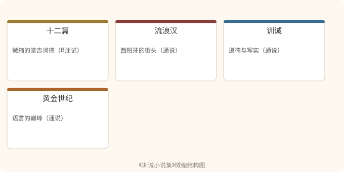

训诫小说集
一、基本信息
| 作者 | 塞万提斯 |
|---|---|
| 成书/出版 | 1613年（作者页注记：Britannica——训诫小说集 (1613)——'有些篇章接近《堂吉诃德》的微缩水准'） Miguel de Cervantes — Encyclopaedia Britannica（百科全书） |
| 国别/地区 | 西班牙 |
| 时代 | 近代 · 17世纪初 |
| 体裁 | 短篇小说集 |
| 语言 | 西班牙语 |

《训诫小说集》微缩结构图（主题·结构图）
二、创作背景
作者页注记：训诫小说集 (1613)——'有些篇章接近《堂吉诃德》的微缩水准'（Britannica：attain a level close to that...）。
Britannica：塞万提斯——《堂吉诃德》作者（作者页语境）。
题材（通说待核）：十二篇'训诫'小说——流浪汉、爱情与道德教训。
三、内容脉络
（通说待核）十二篇的多样性：吉普赛人、两犬对话、英国西班牙女子。
（通说待核）'训诫'与写实的平衡。
四、主要人物表
| 人物 | 身份 | 说明 |
|---|---|---|
| 众篇人物 | —— | （通说待核） |
五、主题与艺术特点
- '微缩的堂吉诃德'（Britannica 引语——注记）。
- 流浪汉小说传统（通说待核）。
- 道德训诫与世俗写作（通说待核）。
六、影响与评论
- Britannica：'有些篇章接近《堂吉诃德》的微缩水准'（作者页注记）。
Miguel de Cervantes — Encyclopaedia Britannica（百科全书） - Britannica：塞万提斯为现代小说开创者之一（作者页语境）。
Miguel de Cervantes — Encyclopaedia Britannica（百科全书）
七、阅读建议
难点
- 黄金世纪西班牙语。
- '训诫'（ejemplar）的含义。
- 《训诫小说集》中译本（人民文学等——通说待核）。
- 西班牙文原版（公有领域）。
《堂吉诃德》后的延伸阅读。
八、待核实
- 篇目（《吉普赛姑娘》《狗的对话》等）核对（通说）。
- 1613年出版（Madrid说）待核。
- '十二篇'数量核对。